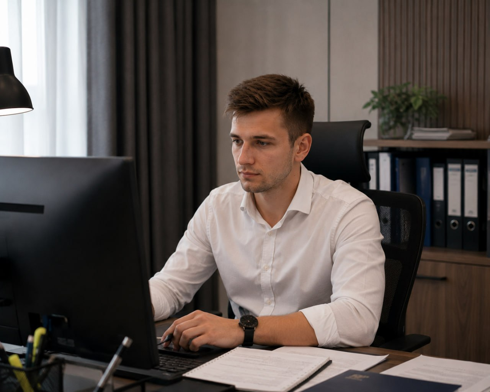
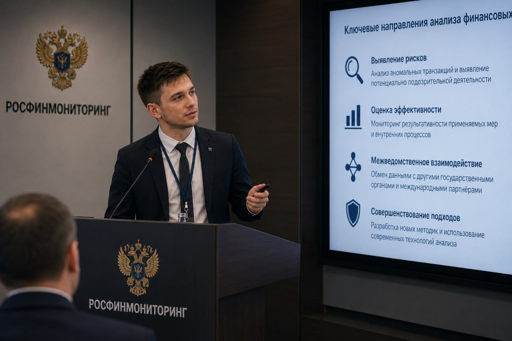

Главный специалист-эксперт / Аналитик ПОД/ФТ
Рябов Роман Александрович родился в 1997 году в городе Калининграде Калининградской области. В 2014 году окончил Специализированную школу с углублённым изучением экономики и права № 49, где проявил интерес к экономическим и правовым дисциплинам, принимал участие в профильных учебных мероприятиях.
В том же году поступил в Калининградский государственный технический университет на направление подготовки «Экономика», профиль «Финансы и кредит», который окончил в 2018 году, получив высшее экономическое образование.
Профессиональное становление Романа Александровича началось с практической работы в банковском секторе Калининградской области. С 2018 по 2020 год он занимал должности специалиста, а затем ведущего специалиста отдела финансового контроля в ПАО «Балтийский коммерческий банк». В его обязанности входили анализ банковских операций, работа с финансовой документацией, проверка клиентских операций и подготовка аналитических материалов.
В 2020 году продолжил профессиональную деятельность в системе Банка России, в подразделении, связанном с банковским надзором и финансовым мониторингом. В этот период занимался анализом финансовой информации, изучением деятельности кредитных организаций и вопросами соблюдения требований законодательства в финансовой сфере.
В 2022 году прошёл повышение квалификации по программе «Финансовый мониторинг и противодействие легализации доходов, полученных преступным путём, и финансированию терроризма». С 2023 года продолжил профессиональное развитие в сфере финансового контроля, банковского надзора и финансовой аналитики.
Профессиональная деятельность Романа Александровича неразрывно связана с аналитическим сопровождением масштабных мероприятий по противодействию легализации преступных доходов. В рамках работы в центральном аппарате ведомства он зарекомендовал себя как высококлассный специалист, способный эффективно распутывать самые сложные и скрытые цепочки финансовых транзакций.
Ежедневные обязанности Романа Александровича охватывают стратегически важные направления работы Управления финансовых расследований, требующие ювелирной точности и системного мышления:

* Ряд материалов и деталей профессиональной деятельности сотрудников ведомства не подлежит разглашению ввиду соблюдения регламентов строгой конфиденциальности и защиты данных субъектов финансового мониторинга.